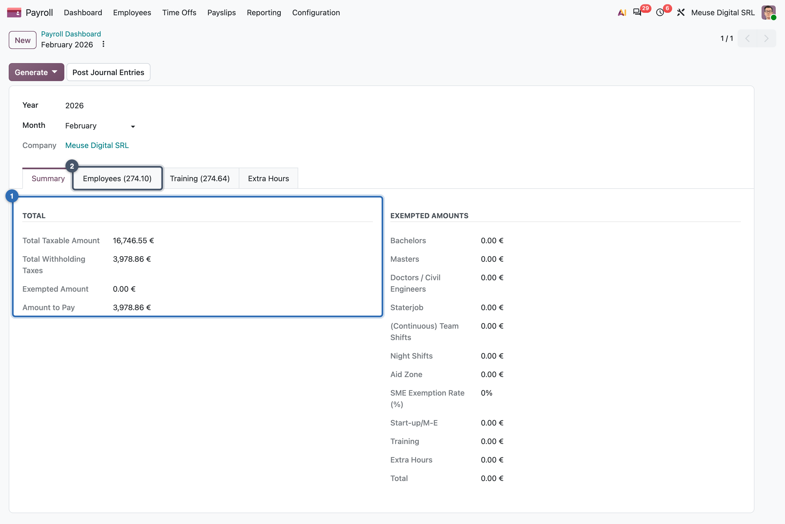
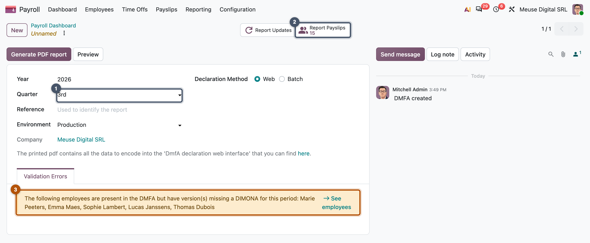
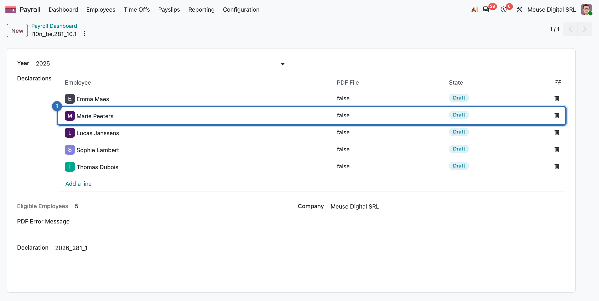
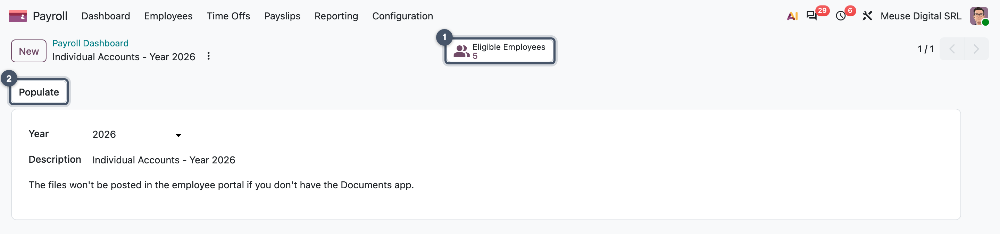
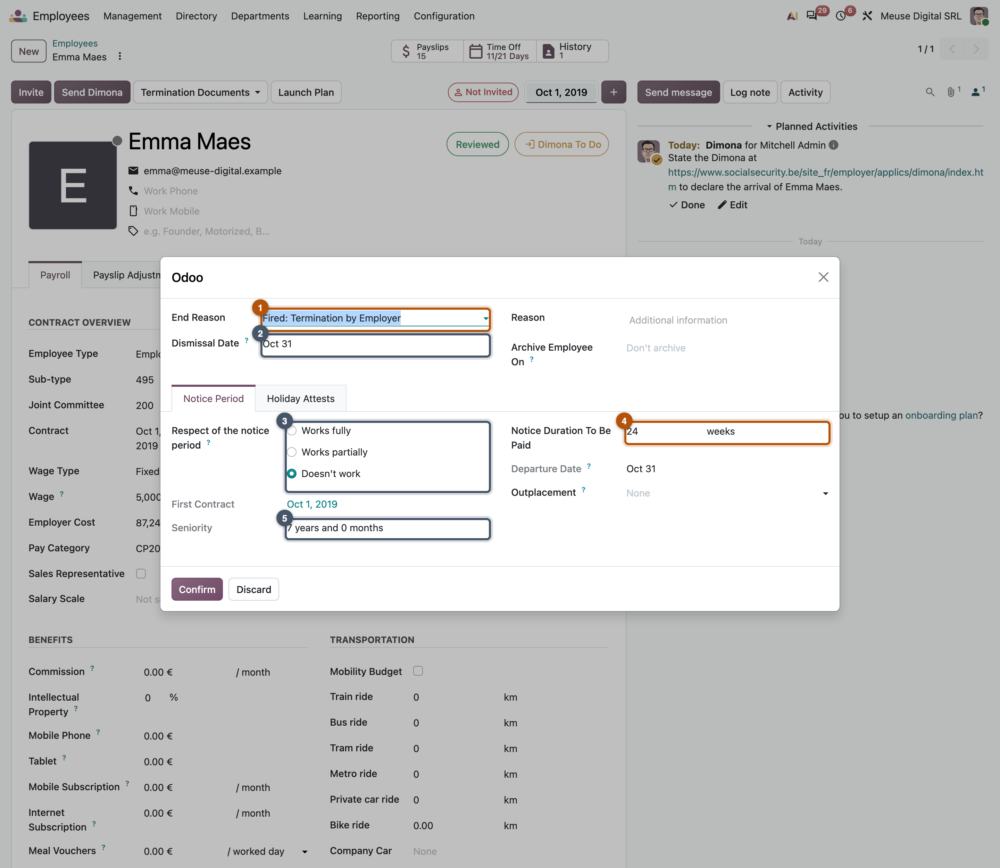
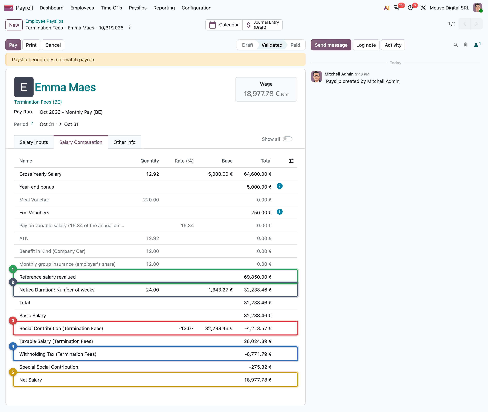

Reports, declarations and a leaver
Pivots for you, statutory returns for the authorities, Emma's departure, and a month in the life
- Use the payroll reports to check a pay run, knowing what their filters hide
- Explain how Odoo builds a declaration from validated payslips, and why categories matter
- Read the Belgian monthly withholding return, quarterly social security return, yearly tax certificates and individual accounts as examples of the generic patterns
- Process a leaver: departure record, exit payslips, and their place in the month
- Replay a full payroll month end to end, in the right order
A payslip is not the end of payroll. You check the run with reports; the authorities receive declarations. This chapter covers both, then follows Emma out of the company and closes Part III with a full month.
Why payroll reports to the authorities
An employer that runs payroll holds money that is not its own: the tax and the contributions it kept back from every payslip. The authorities need to know how much it kept, for whom, and when it pays it over. Employees need it too: their pension, unemployment and health rights, and their own tax return, depend on what the employer declared. So every country asks for reports. The names change from country to country; the four kinds below do not.
A few countries go further and receive payroll as it happens: Mexico wants one signed electronic payslip per payslip, Australia a report to the tax office at every pay run. The idea is the same; only the rhythm changes (Chapter 7).
Reports
Payroll > Reporting > Payslip offers pivots and graphs on payslip lines (per rule, category, employee, period), worked days and inputs.
Common pitfall: the report filters on state
The payslip reports open filtered on validated and paid payslips, so a draft run is invisible. Remove the filter to preview the open month.
In practice: three cross-checks before you declare
- Tax: the month's withholding lines (
PPTOTAL) = the credit on 453000 = the withholding return. February: 3,978.86 € in all three places. - Social security: the quarter's employee and employer contributions = the credits on 454000.
- Headcount: every employee paid in the period appears in the declaration, and nobody else.
How Odoo builds a declaration
Every declaration in Odoo, whatever the country, is a declaration sheet for one period. You create it, and Odoo does the rest in a fixed order:
The framework provides this design once; each country adds its own boxes, file format and checks.
Key idea: a form is a sum of categories
A declaration rarely looks at individual rules. It sums salary rule categories over the period: taxable base, withholding, contribution base. If a rule sits in the wrong category, the payslip can be right and the return wrong. Designing categories is designing the declarations (Chapters 20 and 22).
MyVidangeCompany's declarations
| Declaration | Generic role | Frequency | Same role elsewhere |
|---|---|---|---|
| Form 274 | the withholding-tax return to the tax office | month | US 941, Philippines 1601-C |
| DmfA | the social security return: pay and time per worker | quarter | Philippines SSS file, Kenya pension sheet |
| Form 281.10 | the tax certificate per employee, to employee and tax office | year | US W-2, Philippines 2316, Hong Kong IR56B |
| Individual account | the record of pay per employee the employer must keep | year | Switzerland |
| Dimona | the hiring and exit declaration, before the first hour | event | Hong Kong IR56E / IR56F |
All but Dimona live under Reporting > Belgium; Dimona is sent from the employee form.

3,978.86 € is the sum of the four withholding lines (826.69 + 164.60 + 1,742.31 + 1,245.26) and the 453000 credit of February's entry: three documents, one number.



A leaver: Emma's departure
Emma is dismissed on 31 October 2026 and does not work her notice: the company pays it as an indemnity. A leaver is an event that creates off-cycle payslips, each on its own structure, next to the last regular one.

The dialog creates no payslip. When Emma's last regular payslip enters the October run, Odoo adds her exit payslips to it:
| Emma's October payslips | Structure | Net (€) |
|---|---|---|
| Last month's salary | Monthly Pay (BE) | 3,159.73 |
| Indemnity in lieu of notice | Termination Fees (BE) | 18,977.78 |
| Exit holiday pay, current year | Termination Holidays N (BE) | 3,204.29 |
| Exit holiday pay, previous year | Termination Holidays N-1 (BE) | 0.00 |
| 13th month, pro rata | 13th Month (BE) | 1,757.44 |
An indemnity and holiday pay are taxed at their own rates (Chapter 4): that is why they are separate payslips.

In Belgium
The notice length is a dated parameter (Chapter 12 shows it): 24 weeks for 7 years. Exit holiday pay settles holidays earned but not taken (N-1 is zero: the demo has no 2025 payslips).
Common pitfall: process the departure before the run
Record the departure before you generate October's run. Otherwise the exit payslips land outside the run, or nowhere. To create them by hand, use the Termination Documents menu of the employee form: one button per exit payslip (termination fees, holiday attests, 13th month), each with its inputs filled from the departure.
A month in the life
Part III showed each piece on its own. A payroll officer runs them as one routine, every month, in the same order. The order is not a habit: each step needs the one before it to be finished.
- Record the events: hires, raises, time off, departures (Ch. 13, 14).
- Why first: the payslips are computed from them.
- Generate and compute the run (Ch. 15).
- Review warnings, the change against last month, the reports.
- Validate: the amounts are now final.
- Post the journal entry; check there is no adjustment line (Ch. 16).
- Pay the net with the bank file (Ch. 16).
- Monthly: the withholding return and its payment.
- Quarterly and yearly: social security return, employee certificates.
Most payroll mistakes come from breaking that order: a sick day recorded after validation becomes a correction (Chapter 15); a run validated before the departure is recorded leaves the exit payslips out; a return filed before the payslips are validated declares the wrong amounts. The capstone mission below plays the whole routine on October 2026.
Missions
Mission 17.1 · February's withholding return ★
Situation. The monthly withholding return for February is due. Your accountant wants the amount to pay.
Your goal. Create the February 2026 return and check it against the payslips and accounting.
Check. Taxable amount 16,746.55 €, withholding 3,978.86 €, which is also the 453000 credit in February's entry.
Hint
Reporting > Belgium > 274.XX Sheets > New: year and month are enough.
Mission 17.2 · Summer: holiday pay and the third quarter ★★
Situation. In June Belgian employers pay a second, "double" holiday pay on its own structure. July to September are ordinary months, except Emma's holiday in August (Mission 14.4).
Your goal. Run and validate a run Double Holiday Pay 2026 in June on Double Holidays (BE), then July, August and September on Monthly Pay (BE).
Check. The double holiday run has 5 payslips, net 8,138.92 € (Mélanie 1,864.04 €, Jurgen 1,328.02 €). Emma's August payslip shows 10 days of paid time off worth 2,307.69 €.
Hint
Pick the structure in the run's form. Yannick's double holiday pay is zero: he has no previous year at MyVidangeCompany.
Mission 17.3 · Capstone: October, Emma's last month ★★★
Situation. Emma is dismissed on 31 October 2026 and will not work her notice. Everything else is a normal month.
Your goal. Record the departure, then run and validate October, post its entry, pay it by SEPA, and prepare October's withholding return.
Check.
| Step | Value |
|---|---|
| Departure | notice 24 weeks, seniority 7 years and 0 months, end of notice 16/04/2027 |
| October run | 9 payslips (5 regular, 4 exit), net 39,018.19 €; Emma's termination fees 18,977.78 € |
| SEPA file | 5 transactions, control sum 39,018.19 € (Emma's four payslips in one transfer of 27,099.24 €) |
| Return 274 | taxable 57,907.30 €, withholding 18,301.63 € |
| Entry | total 93,305.69 €, Adjustment Entry 16,140.65 €: explain it as in Mission 16.4 |
Hint
Departure first, then the run: End of Collaboration is under the gear of Emma's form; save with Schedule. If it offers Apply instead (you play after October 2026), first set Archive Employee On after today, or Emma is left out of the run.
Summary
- Payslip reports are pivots on lines, worked days and inputs; they filter on validated payslips by default.
- A declaration finds the employees, sums validated payslips by category, checks, then builds a file or PDFs.
- MyVidangeCompany files a monthly withholding return (274), a quarterly social security return (DmfA), yearly certificates (281.10), individual accounts, and hiring and exit declarations (Dimona).
- February's withholding, 3,978.86 €, matches the payslips, the 453000 credit and the return.
- A leaver is an event that creates off-cycle payslips on their own structures; record the departure before the run.
- Emma's exit: 24 weeks of notice worth 32,238.46 € gross, 18,977.78 € net, plus exit holiday pay and a pro-rata 13th month.
- A month is eight steps; the system computes, books and sums, people decide, check and send.